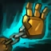
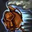
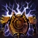

MANA BARRIER
Blitzcrank gains a shield based on their mana when dropping to low health.
ROCKET GRAB
Blitzcrank fires their right hand to grab an opponent on its path, dealing damage and dragging it back to them.
OVERDRIVE
Blitzcrank super charges themself to get dramatically increased Move and Attack Speed.
They are temporarily slowed after the effect ends.
POWER FIST
Blitzcrank charges up their fist to make the next attack deal double damage and pop their target up in the air.
STATIC FIELD
Enemies attacked by Blitzcrank are marked and take lightning damage after 1 second.
Additionally, Blitzcrank can activate this ability to remove nearby enemies' shields, damage them, and silence them briefly.